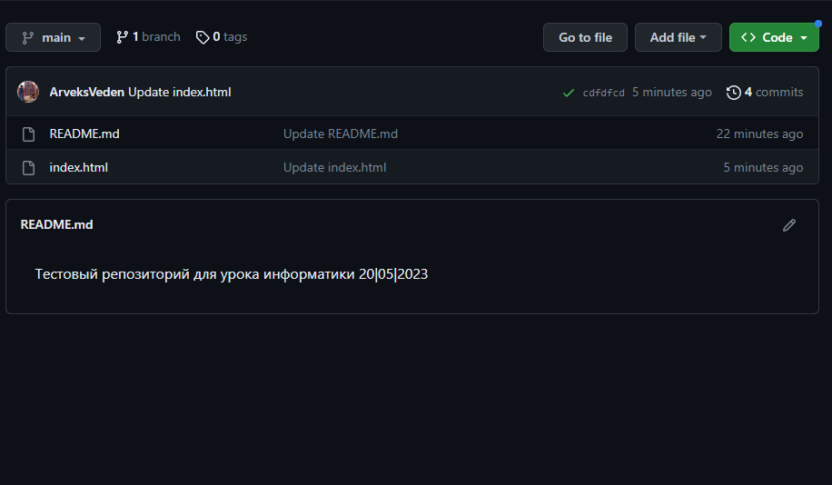

GitHub Pages - это бесплатный сервис хостинга статических сайтов, который предоставляет GitHub. С его помощью вы можете быстро и легко опубликовать свой сайт или блог в интернете.
Для того чтобы создать сайт на GitHub Pages, вам нужно выполнить следующие шаги:
После выполнения этих шагов ваш сайт будет доступен по адресу username.github.io/repository_name
Создание нового репозитория
Настройки нового репозитория >> Pages
Добавление файлов в репозиторий
Отображение файлов проекта в репозитории
Пример 5. Сайт-резюме
Пример 6. Сайт-сообщество